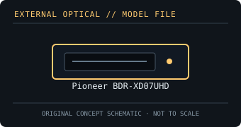

[ OPTICAL DRIVES // IDENTIFIED EXTERNAL MODEL ]
Pioneer BDR-XD07UHD
Portable USB Blu-ray writer with Ultra HD Blu-ray playback support when paired with a compatible PC, display and licensed software. Playback capability is not a recording format.

IDENTIFICATION: Confirm the full model/suffix against the label and manufacturer documentation. Read capability is not write capability; speed ratings depend on media and recording mode.
Model-specific specifications
| Catalog subcategory | External Blu-ray drives |
|---|---|
| Exact product identifier | Pioneer BDR-XD07UHD |
| Supported write formats / rates | BD-R single/dual-layer up to 6×; BDXL BD-R and BD-RE recording is supported at media-dependent rates (BD-R XL up to 2×; BD-RE up to 2×). DVD±R up to 8× and CD-R up to 24×. |
| Supported read formats / rates | Reads BD-ROM, BD-R/RE and supported BDXL media; BD-ROM up to 6×. Also reads DVD-ROM and CD-ROM. Ultra HD Blu-ray is playback-only, not recordable. |
| USB interface and power | USB 3.2 Gen 1 Type-C interface, USB-powered, backward-compatible with USB 2.0 at reduced transfer rates. |
| Host compatibility | Pioneer documents Windows PC operation; UHD Blu-ray playback requires a compliant host/display and supported licensed playback software. Verify OS/software and protected-video hardware before purchase; ordinary data reading/writing depends on host optical-drive support. |
| Model distinction | The UHD suffix is material: it denotes a drive with UHD Blu-ray playback support under the required PC configuration, not UHD disc recording. |
Host and media notes
The UHD suffix is material: it denotes a drive with UHD Blu-ray playback support under the required PC configuration, not UHD disc recording.
- Use the drive only with media types explicitly supported by the exact manual. BDXL, standard BD-R/RE and UHD Blu-ray are distinct capabilities.
- Check operating-system and playback/authoring application support independently; a USB connection alone does not provide Blu-ray codec, protected-video or UHD playback capability.
- For preservation work, record drive model/firmware, host interface, software, media type, checksums and read/verification errors with each image.
Model documentation and specification sources
- Pioneer — BDR-XD07UHD support articleManufacturer support and documentation locator for the exact UHD model.
- Pioneer BDR-XD07UHD operating instructionsModel-specific manual covering media, connection and system requirements.
Manufacturer and manual speed ratings are maxima under supported media conditions and are not a guarantee of actual sustained read/write performance on an individual disc.